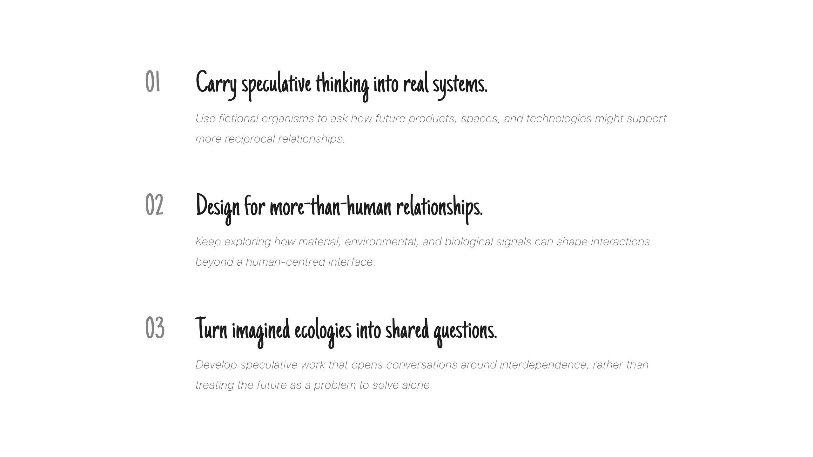

SPECULATIVE DESIGN · 2024
Organisms Utopia
Organisms Utopia is a speculative ecosystem where humans and marine organisms live through mutual exchange. It imagines a future in which the boundary between body and environment becomes porous.
Through wearable organisms, habitat maps, and moving image, the project gives this fictional ecology a physical presence and asks what another relationship between humans and other forms of life might feel like.
- Role
- Interaction & Industrial Designer
- Scope
- Speculative Ecosystem
- Team
- Cross-disciplinary Team
Concept
Imagine a world built on symbiosis.
Organisms Utopia starts with a fictional premise: in a future where oceans cover most of the planet, human life has adapted to the deep and the boundary between human and organism becomes porous. Marine organisms attach to the body as external organs, offering new sensory or functional abilities while drawing nourishment and protection from their host.
Because the goal is to open a question rather than predict a technology, I used speculative design and wearable art to make the premise tangible. The following studies define the organisms, their habitats, and the forms through which a human might live with them.

Interdisciplinary Anchors
Build the fiction from living systems.
Cellular signalling provided a model for how organisms might exchange information. Ecological interdependence offered a second lens: no organism exists alone, and every adaptation changes the conditions around it. Together, these references gave the imagined world rules it could follow.


Organism Studies
Give each organism a reason to exist.
Each organism is defined by a habitat, a capability, a point of attachment, and a reciprocal exchange with the human body. These studies establish four distinct roles within one ecology rather than four disconnected characters.


Human Integration Sketches
Start with the body as a habitat.
I mapped possible points of contact—head, shoulders, arms, hands, chest, and back—to ask where another organism could live without becoming an isolated accessory. The sketches turn the premise into questions of scale, posture, movement, and touch.

Habitat
Place every relationship in context.
The habitat map connects Aquaaura, Immuno, Neutide, and Oxyflora to coral reefs, deep trenches, kelp forests, and open water. Their environments explain why each organism behaves differently and how the larger ecology holds together.

Form Studies
Translate ecological roles into form.
Digital models test how each organism’s role might become volume, surface, and attachment. This stage lets me adjust proportion and silhouette before moving the fictional bodies into physical materials.


Wearable Integration
Design the relationship, not just the object.
The second round of models focuses on the contact between organism and human: where it sits, how it attaches, and how it changes the body’s outline. The form is successful only when both sides of the relationship remain legible.


Material Studies
Make the fiction testable by hand.
3D-printed iterations make scale, material, and assembly available to test. By moving from a digital surface to a physical piece, the imagined ecology begins to have weight, resistance, and a place on the body.


Physical Prototypes
Let the imagined system take physical form.
The final physical studies bring the four organisms into the same world while preserving their different roles and attachments. They make a speculative relationship tangible—something that can be shaped, worn, and encountered.


Final Outcome
Let the ecology become present.
The final forms and film bring the fictional ecology together: wearable organisms become characters, while sound, motion, and atmosphere extend their relationships beyond the object. The outcome keeps the world open enough to imagine, while giving it a material presence.


Reflection
Use fiction to rehearse another relationship.
This project showed me that speculative design becomes legible when the world has rules, the artifacts carry those rules, and the making process makes them tangible. I would carry forward the practice of using fiction not to predict the future, but to test how another way of living might feel.
